맨체스터 연구실의 야간 근무자는 Baby 시험기 앞에서 “부트스트랩 몇 줄만 올리면 알아서 돌아갈까요?”라고 중얼거렸고, 디트로이트 GM 밤조는 “테이프만 갈다 보면 해
뜨겠다”며 모니터 프로그램을 꿈꿨습니다. NASA와 대학 연구실은 한 대의 기계를 여러 사람이 나눠 쓰는 타임셰어링을 시험하며 “순서를 공평하게 돌릴 방법”을 찾고
있었습니다.
이후 IBM은 System/360을 내놓으며 “기종이 달라도 같은 OS를 쓰게 해 드립니다”라고 약속했고, 벨 연구소 연구원들은 UNIX를 만들며 “작은 도구를 이어 붙이면
복잡한 일도 풀립니다”라고 설득했습니다. MS-DOS와 Macintosh, Windows 95는 집과 사무실을 같은 UI로 엮었고, 리눅스 커뮤니티는 “커널은 같이 고치는
것”이라는 문화를 세웠습니다. 2000년대 이후 Mac OS X, iPhone OS, Android, Docker, Kubernetes는 손안과 클라우드에서 같은 경험을
요구하며 운영체제의 영역을 계속 넓혔습니다.
아래 연표를 누르면 그 시절 운영체제가 무엇을 걱정했고 어떤 해법을 내놓았는지 이야기로 살펴볼 수 있습니다. 낯선 용어가 나와도 괜찮아요. 각 모달이 사람과 상황, 남은
교훈을 차근차근 풀어 줍니다.
버튼을 선택하면 같은 화면에서 자세한 이야기를 읽을 수
있습니다.
1940s
저장 프로그램 시대를 여는 첫 부트스트랩
릴레이 배선 대신 짧은 초기 명령을 메모리에 실어 올려, 전자식 컴퓨터가 스스로 프로그램을 불러오고 반복
실행할 수 있는 기반을 만들었습니다.
1950s
야간 조를 도운 배치 모니터
메인프레임 운영자들은 테이프를 갈아 끼우지 않아도 되도록 작업을 자동으로 줄 세우고, 공통 절차를 모니터
프로그램에 담았습니다.
1960s
타임셰어링과 이식성 실험
System/360은 “하드웨어가 달라도 같은 OS”를 약속했고, UNIX는 작은 도구를 조합하며 이식성이
있는 커널을 선보였습니다.
1970s
마이크로컴퓨터와 가상 메모리 확장
작은 컴퓨터도 디스크와 여러 작업을 다룰 수 있게 CP/M과 VMS가 공통 인터페이스와 가상 메모리를
보급했습니다.
1980s
PC 보급과 그래픽 데스크톱
MS-DOS가 공통 규칙을 세우고, 매킨토시가 아이콘과 마우스를 대중화하며 PC가 일상 도구가 되었습니다.
1990s
오픈소스와 일상형 OS
리눅스 커뮤니티가 커널을 함께 고쳤고, Windows 95는 스타트 버튼으로 가정과 사무실 모두를
겨냥했습니다.
2000s
UNIX 감성과 모바일 도약
Mac OS X는 UNIX와 디자인을 묶었고, iPhone OS와 Android는 터치와 앱 생태계를 운영체제
수준에서 설계했습니다.
2010s
컨테이너와 클러스터 운영
Docker와 Kubernetes가 “이미지를 묶어 옮기고, 원하는 상태를 선언하면 제어 루프가 맞춰 준다”는
발상을 일상 도구로 만들었습니다.
2020s
실리콘 전환과 하이브리드 경험
맞춤형 칩, 가상 데스크톱, 클라우드 PC를 한 화면에서 조율하며 “어디에서 실행돼도 같은 느낌”을 주려는
운영체제가 등장했습니다.
더 깊이 읽을 거리
운영체제가 배치 작업, 타임셰어링, 모바일과 클라우드를 품어 가는 과정을 기록한 1차 자료와 회고를 모았습니다.
맨체스터 연구진은 “초기 명령 몇 줄이면 충분하다”는 믿음을 Baby 실험으로 증명했습니다.
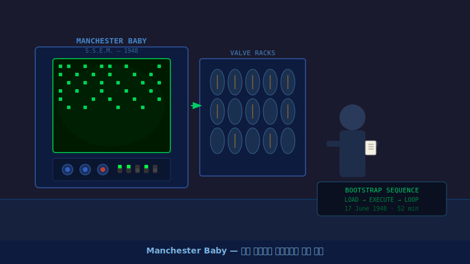
1948년, 영국의 연구진은 컴퓨터 역사에 남을 중요한 실험을 성공시켰습니다. 이전까지의 컴퓨터는 새로운 계산을 할 때마다 사람이 직접 수많은 전선을 뽑고 다시 연결해야 했습니다. 하지만 '맨체스터 베이비(Manchester Baby)'라는 이름의 이 실험용 컴퓨터는 달랐습니다.
연구진이 짧은 초기 명령어를 입력하자, 컴퓨터는 스스로 메모리에 저장된 다음 명령을 불러와 실행하기 시작했습니다. 기계가 스스로 프로그램을 읽어 들인 역사적인 첫날이었습니다.
이 실험은 '데이터와 프로그램을 모두 메모리에 저장한다'는 현대 컴퓨터의 기본 구조를 최초로 증명했습니다. 덕분에 우리는 복잡한 전선 연결 없이 소프트웨어만 교체하여 컴퓨터에게 다양한 일을 시킬 수 있게 되었습니다.
이때 사용된 '짧은 초기 명령어로 전체 프로그램을 불러오는 방식'은 오늘날 우리가 컴퓨터 전원을 켤 때 운영체제가 실행되는 과정(부팅)의 기초가 되었습니다.
1949
EDSAC Initial Orders, 표준 부트스트랩과 루틴을 묶다
케임브리지 팀은 31줄짜리 Initial Orders로 “테이프만 넣으면 됩니다”라는 약속을 지켰습니다.
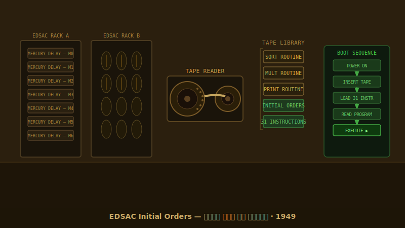
1949년 케임브리지 대학의 연구진은 컴퓨터 사용을 훨씬 편리하게 만들었습니다. 이전에는 프로그램을 실행하려면 복잡한 스위치 조작이 필요했지만, 이들은 '초기 명령(Initial Orders)'이라는 31줄짜리 짧은 코드를 미리 준비해 두었습니다.
이제 사용자는 전원을 켜고 종이테이프를 넣기만 하면, 컴퓨터가 알아서 프로그램을 메모리로 복사해 실행했습니다. 게다가 덧셈이나 곱셈처럼 자주 쓰는 계산식은 '라이브러리'라는 이름의 공용 테이프로 만들어 두어, 필요할 때마다 쉽게 가져다 쓸 수 있었습니다.
이렇게 자주 쓰는 기능들을 미리 모아두고 필요할 때 불러다 쓰는 방식은, 훗날 운영체제가 프로그램들에게 공통 기능을 제공하는 구조로 발전했습니다.
1956
GM-NAA I/O, 배치 작업을 자동으로 넘기다
GM과 NAA 야간조는 GM-NAA I/O 덕에 “테이프만 갈다 날 새네”라는 하소연을 접을 수 있었습니다.
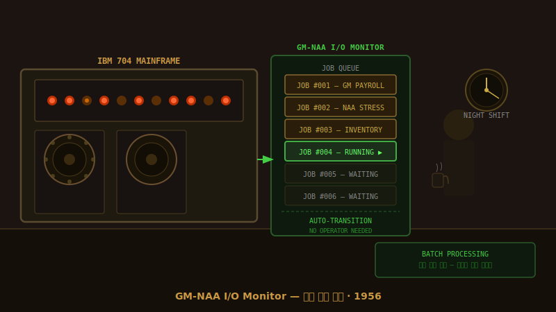
1950년대 중반, 컴퓨터는 여전히 한 번에 하나의 작업만 처리할 수 있었습니다. 작업이 끝날 때마다 관리자가 직접 다음 작업이 담긴 테이프를 갈아 끼워야 했기 때문에, 밤새워 기계를 지켜보는 일이 다반사였습니다.
이 문제를 해결하기 위해 제너럴 모터스(GM)와 노스 아메리칸 항공(NAA)은 'GM-NAA I/O'라는 프로그램을 개발했습니다. 이 프로그램은 앞선 작업이 끝나면 사람의 개입 없이 스스로 다음 작업을 불러와 실행했습니다.
덕분에 관리자는 작업 카드들을 미리 쌓아두기만 하면 되었고, 컴퓨터는 쉬지 않고 연속해서 계산을 처리할 수 있게 되었습니다.
이처럼 여러 작업을 모아서 자동으로 순차 처리하는 방식을 '일괄 처리(Batch Processing)'라고 부르며, 이는 초기 운영체제의 가장 중요한 역할이 되었습니다.
1959
Fortran Monitor System, 코드 재사용을 지원하다
FMS는 “컴파일부터 출력까지 한 번에 돌려 드려요”라며 공유 매크로를 키트처럼 묶었습니다.
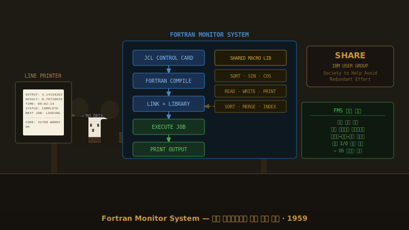
SHARE 회원들은 서로 주고받던 매크로 카드 묶음을 IBM 본사 회의실 책상 위에 올려놓고 “한 패키지로 묶어 주세요”라고 부탁했습니다. 그렇게 만들어진 FMS는 카드
앞부1950년대 후반, 프로그래머들은 코드를 작성하고 실행하는 과정이 너무 번거롭다고 느꼈습니다. 코드를 기계어로 번역(컴파일)하고, 다른 코드와 연결(링크)한 뒤, 실행하고 결과를 출력하는 모든 단계를 일일이 지시해야 했기 때문입니다.
IBM 사용자 모임인 SHARE는 이 과정을 하나로 묶어주는 '포트란 모니터 시스템(FMS)'을 만들었습니다. 작업 카드 맨 앞에 간단한 제어문만 붙여두면, 시스템이 번역부터 출력까지의 전 과정을 자동으로 처리해 주었습니다.
또한, 누구나 자주 사용하는 기능들을 공용 테이프에 모아두어, 어떤 팀이든 동일하고 안정적인 결과를 얻을 수 있게 되었습니다.
FMS가 도입한 '작업 제어 방식'과 '공용 라이브러리' 개념은 이후 운영체제가 복잡한 프로그램 실행 과정을 숨기고 단순하게 만들어주는 핵심 기능으로 자리 잡았
1964
System/360, 하나의 OS로 가족 제품을 지원하다
System/360은 “기계를 바꿔도 다시 코딩하지 마세요”라는 약속으로 호환성의 무게를 보여 줬습니다.
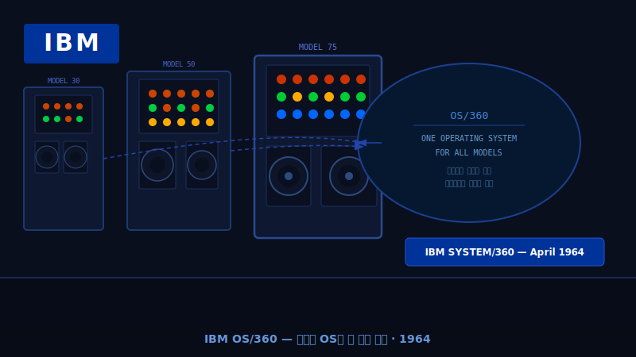
1960년대 초반까지만 해도 컴퓨터 기종이 바뀌면 그에 맞춰 프로그램을 처음부터 다시 짜야 했습니다. 기업들에게 이는 엄청난 비용과 시간 낭비였습니다.
1964년, IBM은 'System/360'이라는 새로운 컴퓨터 제품군을 발표하며 이 문제를 해결했습니다. 크기나 성능이 다른 여러 기종의 컴퓨터가 'OS/360'이라는 하나의 운영체제를 공유하도록 만든 것입니다.
운영체제가 하드웨어의 복잡한 차이를 중간에서 가려준 덕분에, 개발자들은 한 번 만든 프로그램을 기종에 상관없이 그대로 사용할 수 있게 되었습니다. 이는 컴퓨터 역사상 가장 혁신적인 변화 중 하나였습니다.
OS/360이 확립한 '하드웨어와 소프트웨어의 분리' 원칙은 오늘날 우리가 스마트폰이나 PC를 바꿀 때 기존 앱을 그대로 쓸 수 있게 해주는 호환성의 뿌리가 되었습니다.
1969
UNIX, 작은 도구를 조합하는 철학을 심다
UNIX는 “작은 도구를 이어 붙이면 된다”는 철학으로 파일처럼 다루는 세상을 열었습니다.
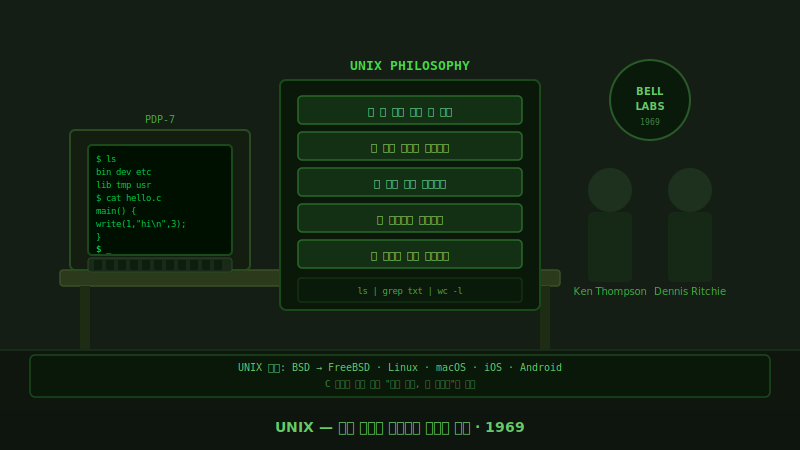
1969년 벨 연구소의 연구원들은 크고 복잡한 운영체제 대신, 작고 효율적인 시스템을 만들기로 결심했습니다. 그렇게 탄생한 '유닉스(UNIX)'는 컴퓨터 역사에 지울 수 없는 발자취를 남겼습니다.
유닉스의 핵심 철학은 "한 가지 일을 완벽하게 하는 작은 도구들을 만들고, 이들을 연결해 복잡한 작업을 수행한다"는 것이었습니다. 또한, 키보드나 모니터 같은 모든 장치를 '파일'이라는 하나의 개념으로 통일하여 다루기 쉽게 만들었습니다.
유닉스의 소스코드는 대학과 연구소로 퍼져나갔고, 전 세계의 개발자들이 자발적으로 코드를 수정하고 발전시키는 독특한 문화를 만들어냈습니다.
유닉스의 간결한 설계 철학과 '모든 것은 파일이다'라는 원칙은 오늘날 리눅스(Linux), 맥OS(macOS), 안드로이드(Android) 등 현대 운영체제 대부분의 뼈대가 되었습니다.
1974
CP/M, 마이크로컴퓨터용 표준 OS
CP/M은 “BIOS만 맞추면 앱이 돌아요”라며 마이크로컴퓨터에 공동 언어를 줬습니다.
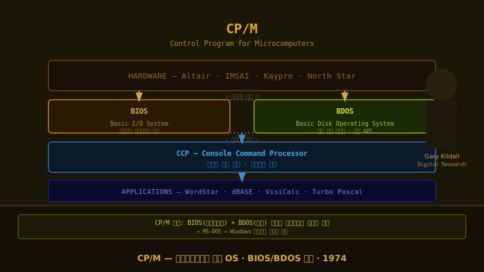
게리 킬달은 제조사 대표들과 만나 “여러분 기계마다 디스크 호출이 다르잖아요. 이 밑단만 맞춰 주세요.”라고 설득했습니다. CP/M은 공통 부분인 BDOS와 기기별 BIOS를
분리1970년대 개인용 컴퓨터(PC)가 처음 등장했을 때, 제조사마다 하드웨어 구조가 달라 소프트웨어를 공유하기 어려웠습니다.
게리 킬달이 개발한 'CP/M'은 이 문제를 영리하게 해결했습니다. 그는 운영체제를 두 부분으로 나누어, 하드웨어를 직접 다루는 부분(BIOS)과 프로그램이 실행되는 공통 부분(BDOS)을 분리했습니다.
제조사들은 자신의 기계에 맞게 BIOS만 수정하면 되었고, 소프트웨어 개발자들은 CP/M용으로 한 번만 프로그램을 만들면 어떤 회사의 컴퓨터에서든 실행할 수 있었습니다. 바야흐로 PC 소프트웨어 시장이 열린 것입니다.
CP/M이 도입한 '하드웨어 제어 계층의 분리' 구조는 이후 MS-DOS를 거쳐 현대 운영체제가 다양한 부품을 지원하는 드라이버 시스템의 기초가 되었
1978
VAX/VMS, 가상 메모리와 클러스터를 대중화
VAX/VMS는 “중형 컴퓨터도 24시간 버틸 수 있다”는 자신감을 주며 가상 메모리와 클러스터를 확산시켰습니다.
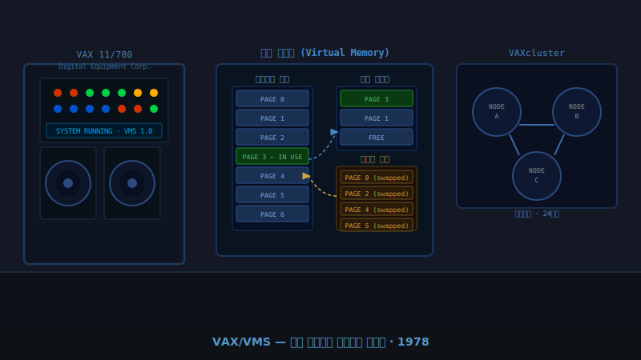
DEC 엔지니어는 시연장에서 VAX 콘솔을 가리키며 “지금 이 프로그램은 실제 메모리보다 더 큰 데이터를 쓰고 있습니다”라고 설명했습니다. VMS는 페이지를 디스크로 넘겨
프로그램이 물리 메모리 한계를 의식하지 않게 했습니다.
1970년대 후반, 기업들은 더 많은 데이터를 처리해야 했지만 컴퓨터의 메모리 용량은 턱없이 부족했습니다.
DEC사가 출시한 'VAX/VMS' 운영체제는 '가상 메모리'라는 마법 같은 기술을 대중화했습니다. 실제 메모리가 꽉 차면 당장 쓰지 않는 데이터를 하드디스크로 잠시 옮겨두어, 프로그램이 마치 무한한 메모리를 가진 것처럼 작동하게 만든 것입니다.
또한, 여러 대의 컴퓨터를 하나로 묶어주는 '클러스터' 기능을 통해, 한 대가 고장 나도 다른 컴퓨터가 즉시 작업을 이어받아 24시간 멈추지 않는 안정적인 서비스를 가능하게 했습니다.
VMS가 선보인 가상 메모리 관리와 시스템 보호 기술은 훗날 윈도우 NT(Windows NT)의 설계에 큰 영향을 주었으며, 현대 서버 운영체제의 필수 기능이
1981
MS-DOS, IBM PC 생태계를 단단히 묶다
MS-DOS는 “명령은 같고 부품만 바뀝니다”라며 IBM PC 호환 생태계를 묶었습니다.
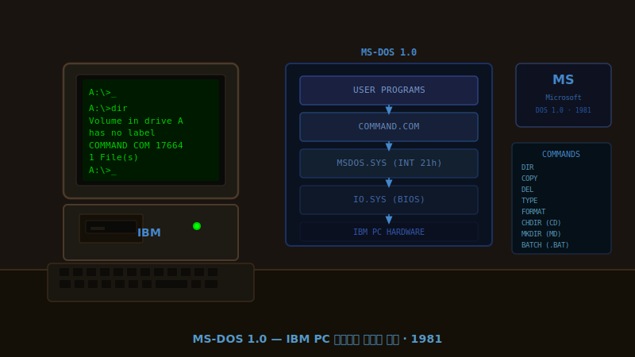
1981년, IBM이 개인용 컴퓨터(IBM PC)를 출시하면서 마이크로소프트의 'MS-DOS'를 기본 운영체제로 채택했습니다.
MS-DOS는 검은 화면에 텍스트로 명령어를 입력하는 방식이었지만, 파일 복사나 디렉토리 관리 같은 필수적인 기능들을 안정적으로 제공했습니다. 무엇보다 중요한 점은, IBM PC와 호환되는 수많은 복제 컴퓨터들이 모두 MS-DOS를 사용하게 되었다는 것입니다.
덕분에 사용자들은 어떤 회사의 PC를 사더라도 똑같은 명령어로 컴퓨터를 다룰 수 있었고, 개발자들은 MS-DOS용 프로그램만 만들면 전 세계 수백만 대의 PC에서 실행할 수 있었습니다.
MS-DOS를 중심으로 형성된 거대한 소프트웨어 생태계는 마이크로소프트가 PC 시장을 주도하는 발판이 되었으며, 이후 윈도우(Windows) 시대로 자연스럽게 이어졌습니다.
1984
맥킨토시 System 1, 그래픽 UI 대중화
맥킨토시 System 1은 “아이콘을 옮기면 돼요”라는 말로 그래픽 인터페이스를 일상어로 만들었습니다.
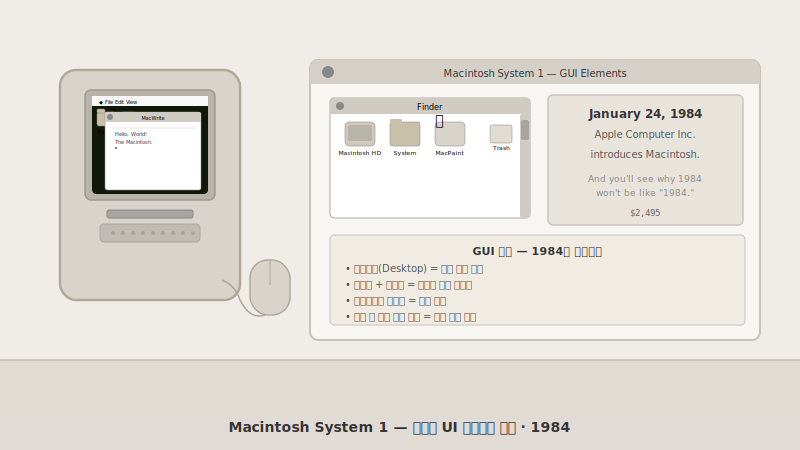
1984년, 애플이 선보인 '매킨토시(Macintosh)'는 컴퓨터를 다루는 방식을 완전히 바꿔놓았습니다. 이전까지는 키보드로 복잡한 명령어를 외워서 쳐야 했지만, 매킨토시의 'System 1' 운영체제는 화면에 그림(아이콘)을 띄워놓고 마우스로 클릭하는 방식을 도입했습니다.
파일을 지우고 싶으면 휴지통 아이콘으로 끌어다 놓기만 하면 되었습니다. 누구나 직관적으로 이해할 수 있는 이 '그래픽 사용자 인터페이스(GUI)' 덕분에, 전문가의 전유물이었던 컴퓨터가 일반 대중의 책상 위로 올라올 수 있었습니다.
또한, 애플은 모든 프로그램이 비슷한 메뉴와 화면 구성을 갖도록 규칙을 만들어, 사용자가 새로운 프로그램을 배워야 하는 부담을 크게 줄여주었습니다.
System 1이 선보인 창, 아이콘, 마우스 포인터 중심의 화면 구성은 오늘날 우리가 사용하는 모든 PC와 스마트폰 인터페이스의 출발점이 되었습니다.
1991
리눅스, 누구나 커널에 기여하는 시대
리눅스는 “취미로 시작했는데 같이 해요?”라는 글 하나로 커널 개발을 공동 작업으로 바꿨습니다.
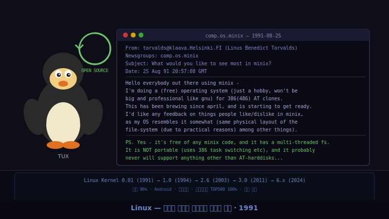
1991년, 핀란드의 대학생 리누스 토르발스는 인터넷 게시판에 "취미로 운영체제를 만들고 있는데, 아이디어가 있으면 알려달라"는 글을 올렸습니다. 이것이 바로 '리눅스(Linux)'의 시작이었습니다.
그는 자신이 만든 운영체제의 설계도(소스코드)를 전 세계에 무료로 공개했습니다. 그러자 수많은 프로그래머들이 자발적으로 코드를 수정하고 새로운 기능을 추가하며 리눅스를 함께 발전시켜 나갔습니다.
특정 기업이 독점하지 않고 전 세계가 함께 만드는 이 '오픈소스' 방식은 소프트웨어 개발의 패러다임을 완전히 바꾸어 놓았습니다.
오늘날 리눅스는 전 세계 웹 서버의 대부분, 안드로이드 스마트폰, 스마트 TV, 심지어 화성 탐사선에 이르기까지 보이지 않는 곳에서 세상을 움직이는 가장 중요한 운영체제가 되었습니다.
1995
Windows 95, 시작 버튼으로 생활을 묶다
Windows 95는 “시작 버튼만 누르면 됩니다”라는 안내로 집과 사무실을 같은 OS로 엮었습니다.
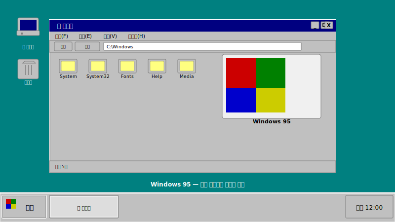
Windows 95 발표회에서 스티브 발머는 초록색 시작 버튼을 눌러 보이며 “여기만 누르면 필요한 게 다 나옵니다”라고 웃었습니다. 플러그앤플레이가 새 하드웨어를 찾아
드라1995년 출시된 '윈도우 95(Windows 95)'는 전 세계적인 신드롬을 일으켰습니다. 가장 큰 변화는 화면 왼쪽 아래에 자리 잡은 '시작' 버튼이었습니다. 이 버튼 하나만 누르면 컴퓨터의 모든 프로그램과 설정에 쉽게 접근할 수 있었습니다.
또한, 새로운 기기를 연결하면 컴퓨터가 알아서 인식하고 설정해 주는 '플러그 앤 플레이' 기능이 도입되어, 초보자도 쉽게 프린터나 마우스를 연결할 수 있게 되었습니다.
윈도우 95는 직관적인 화면과 편리한 사용성으로 가정과 사무실의 PC 환경을 통일하며, 본격적인 1인 1PC 시대를 여는 결정적인 역할을 했습니다.
시작 메뉴와 작업 표시줄로 대표되는 윈도우 95의 화면 디자인은 너무나 성공적이어서, 수십 년이 지난 현재의 윈도우 시스템에서도 그 기본 틀이 그대로 유지되고 있
2001
Mac OS X, UNIX 안정성과 디자인 결합
Mac OS X는 “UNIX 뼈대에 디자인을 더했습니다”라며 안정성과 감성을 동시에 붙잡았습니다.
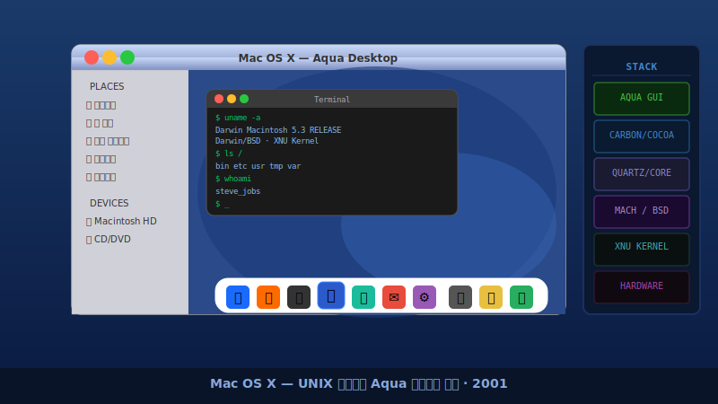
WWDC 무대에서 애플은 반짝이는 Aqua 창을 띄우면서도 터미널을 열어 ls를 실행해 보였습니다. 디자이너와 개발자가 같은 OS에서 각자 원하는
장점2001년, 애플은 기존의 운영체제를 완전히 갈아엎고 'Mac OS X'를 발표했습니다. 겉보기에는 물방울처럼 투명하고 아름다운 디자인(Aqua)을 갖추고 있었지만, 그 속에는 서버용으로 쓰일 만큼 강력하고 안정적인 '유닉스(UNIX)' 기반의 뼈대가 자리 잡고 있었습니다.
이 절묘한 결합 덕분에 일반 사용자들은 화려하고 직관적인 화면을 즐길 수 있었고, 개발자들은 강력한 프로그래밍 도구들을 마음껏 사용할 수 있었습니다.
프로그램 하나가 멈춰도 컴퓨터 전체가 다운되지 않는 뛰어난 안정성 덕분에, Mac은 전문가와 일반인 모두에게 사랑받는 기기로 거듭났습니다.
Mac OS X가 확립한 '탄탄한 유닉스 기반 위의 세련된 인터페이스' 구조는 이후 아이폰(iOS)과 애플워치(watchOS) 등 애플의 모든 스마트 기기 운영체제로 이어졌
2007
iPhone OS 1, 터치 퍼스트 인터페이스
iPhone OS 1은 “손가락만으로 다 할 수 있어요”라는 약속으로 터치 퍼스트 시대를 열었습니다.
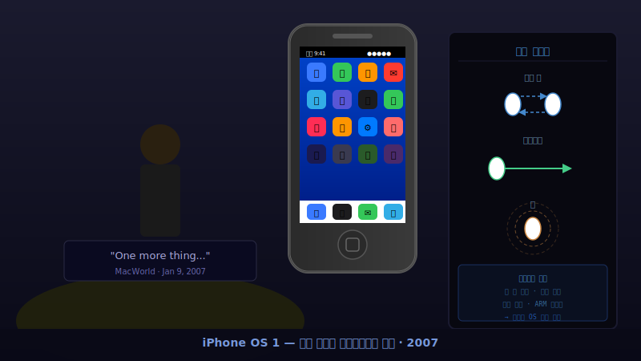
2007년, 첫 번째 아이폰과 함께 등장한 'iPhone OS(훗날 iOS)'는 우리가 기계와 소통하는 방식을 근본적으로 바꿨습니다. 물리적인 키보드나 터치펜 대신, 오직 손가락만으로 모든 것을 조작하는 '멀티터치' 화면을 선보인 것입니다.
두 손가락을 벌려 사진을 확대하고, 화면을 쓸어넘겨 페이지를 이동하는 자연스러운 동작은 따로 설명서가 필요 없을 만큼 직관적이었습니다.
또한, 각각의 앱이 서로의 영역을 침범하지 못하게 막는 '샌드박스' 구조를 도입하여, 바이러스나 악성코드로부터 스마트폰을 안전하게 보호하는 강력한 보안 체계를 구축했습니다.
iPhone OS가 제시한 터치 중심의 인터페이스와 안전한 앱 실행 환경은 현대 스마트폰의 표준이 되었으며, 이후 '앱 스토어'라는 거대한 모바일 생태계가 탄생하는 기반이 되었습니다.
2008
Android 1.0, 오픈 모바일 플랫폼
Android 1.0은 “누구나 같은 SDK로 폰을 만들 수 있다”며 오픈 플랫폼을 현실로 만들었습니다.
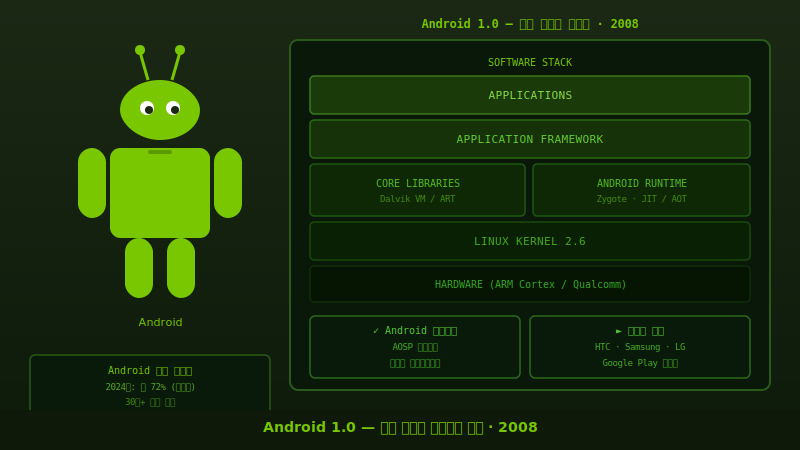
2008년, 구글은 누구나 무료로 가져다 쓸 수 있는 개방형 모바일 운영체제 '안드로이드(Android)'를 세상에 내놓았습니다.
애플이 아이폰이라는 하나의 기기에 집중한 것과 달리, 구글은 전 세계의 스마트폰 제조사들이 안드로이드를 이용해 각자의 입맛에 맞는 다양한 기기를 만들 수 있도록 설계도를 공개했습니다.
제조사들은 화면 디자인을 자유롭게 바꾸면서도 안드로이드의 핵심 기능은 그대로 공유했습니다. 덕분에 개발자들은 한 번만 앱을 만들면 수많은 종류의 안드로이드폰에서 실행할 수 있었고, 이는 안드로이드가 세계에서 가장 널리 쓰이는 모바일 운영체제로 성장하는 원동력이 되었습니다.
안드로이드의 개방적인 정책은 스마트폰의 대중화를 앞당겼으며, 다양한 제조사와 서비스가 하나의 생태계 안에서 공존하고 경쟁하는 혁신적인 시장을 만들어냈습니다.
2013
Docker, 컨테이너를 일상 도구로
Docker는 “이미지 한 통으로 환경을 옮기세요”라는 구호로 컨테이너를 일상 도구로 바꿨습니다.
2013년에 등장한 '도커(Docker)'는 소프트웨어 개발과 운영의 세계에 혁명을 일으켰습니다. 이전에는 개발자의 컴퓨터에서 잘 돌아가던 프로그램이 실제 서비스 서버에 올리면 에러가 나는 일이 잦았습니다. 컴퓨터마다 설정이나 환경이 달랐기 때문입니다.
도커는 프로그램과 그 실행에 필요한 모든 환경 설정을 '컨테이너'라는 하나의 상자에 깔끔하게 포장해 주는 기술입니다. 마치 규격화된 화물 컨테이너가 배, 기차, 트럭 어디든 쉽게 실릴 수 있는 것처럼 말이죠.
이제 개발자는 이 컨테이너 상자만 전달하면 되고, 운영자는 복잡한 설정 없이 상자를 실행하기만 하면 되었습니다. "내 컴퓨터에서는 되는데?"라는 변명이 옛말이 된 것입니다.
도커가 대중화시킨 컨테이너 기술은 소프트웨어를 빠르고 안전하게 배포하는 현대 클라우드 환경의 핵심 표준으로 자리 잡았습니다.
2015
Kubernetes 1.0, 선언형 클러스터 운영
Kubernetes 1.0은 “원하는 상태만 적어 주세요”라며 클러스터 운영을 선언형으로 바꿨습니다.
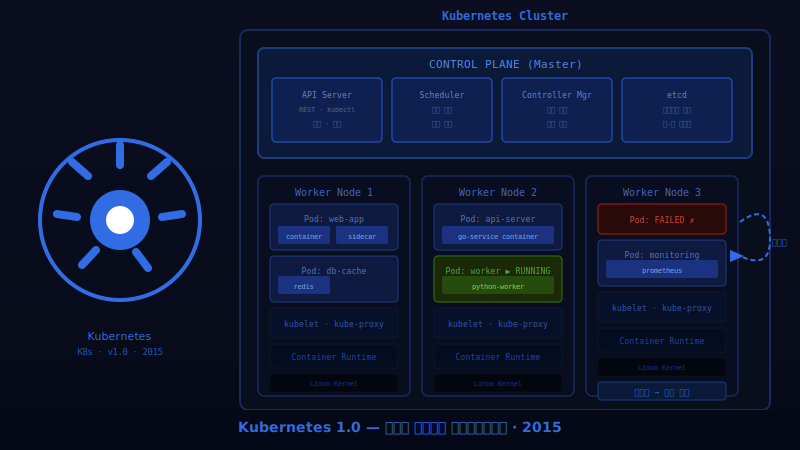
도커 덕분에 프로그램을 컨테이너로 포장하기는 쉬워졌지만, 서비스 규모가 커지면서 수백, 수천 개의 컨테이너를 관리하는 것은 또 다른 골칫거리가 되었습니다.
2015년 구글이 공개한 '쿠버네티스(Kubernetes)'는 이 수많은 컨테이너들을 지휘하는 똑똑한 오케스트라 지휘자입니다. 관리자가 "웹사이트 서버 3대를 항상 유지해 줘"라고 목표 상태만 적어두면, 쿠버네티스가 알아서 서버를 띄우고 관리합니다.
만약 서버 하나가 고장 나면, 쿠버네티스가 이를 즉시 감지하고 새로운 서버를 자동으로 실행하여 목표 상태를 유지합니다. 사람이 일일이 감시하고 복구할 필요가 없어진 것입니다.
쿠버네티스의 '목표 상태를 선언하면 시스템이 알아서 맞춘다'는 개념은 현대 클라우드 인프라를 자동화하고 안정적으로 운영하는 가장 중요한 원칙이 되었습니다.
2020
macOS Big Sur, Apple Silicon 전환의 교두보
macOS Big Sur는 “칩이 바뀌어도 앱은 그대로”라는 전환 매뉴얼로 Apple Silicon 시대를 열었습니다.
2020년, 애플은 컴퓨터의 두뇌인 CPU를 인텔 제품에서 자체 개발한 '애플 실리콘(M1 칩)'으로 바꾸는 거대한 도전을 시작했습니다. 이와 함께 등장한 'macOS Big Sur'는 이 새로운 두뇌에 맞춰 완전히 새롭게 설계된 운영체제입니다.
가장 놀라운 점은, 아이폰이나 아이패드에서 쓰던 앱을 맥 컴퓨터에서도 그대로 실행할 수 있게 되었다는 것입니다. 스마트폰과 컴퓨터의 경계가 허물어지기 시작한 순간입니다.
또한, 기존 인텔 칩용으로 만들어진 프로그램들도 '로제타 2'라는 번역 기술을 통해 새로운 M1 칩에서 문제없이, 심지어 더 빠르게 돌아가도록 만들었습니다. 이는 하드웨어와 소프트웨어를 모두 직접 만드는 애플만이 할 수 있는 마법 같은 일이었습니다.
macOS Big Sur는 컴퓨터와 모바일 기기의 생태계를 하나로 통합하는 중요한 이정표가 되었으며, 애플 실리콘의 강력한 성능을 이끌어내는 핵심 역할을 했습니다.